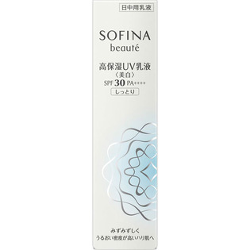

返回列表
产品名称：ソフィーナボーテ 高保湿UV乳液美白 SPF30PA++++ しっとり

花王 ソフィーナボーテ 高保湿UV乳液美白 SPF30PA++++ しっとり ３０Ｇ（医薬部外品）
メーカー 花王
JANコード 4901301325334
商品の特徴
朝のみ使用で約３ヶ月分
- 成分・分量
- カモミラET＊、水、ジメチコン、BG、シクロジメチコン、低温焼成酸化Zn、シリコン被覆酸化亜鉛（S）、パラメトキシケイ皮酸オクチル、イソノナン酸イソトリデシル、エタノール、2-［4-（ジエチルアミノ）-2-ヒドロキシベンゾイル］安息香酸ヘキシルエステル、アスナロ抽出液、ローズマリーエキス、ヘキサデシロキシPGヒドロキシエチルヘキサデカナミド、チューベロースポリサッカライド液、水溶性ショウキョウエキス（K）、ユーカリエキス、グリセリン、イソステアリン酸コレステリル、スクワラン、コレステロール、メチルハイドロジェンポリシロキサン、ヒドロキシエチルセルロースヒドロキシプロピルステアリルエーテルヒドロキシプロピルスルホン酸ナトリウム、POE・ジメチコン共重合体、ステアリン酸ソルビタン、N-プロピオニルポリエチレンイミン・メチルポリシロキサン共重合体液（30％）、ビタミンE、無水エタノール、香料＊は「有効成分」無表示は「その他の成分」
- 用法及び用量
- ＜使用方法＞
適量（直径1．3cmの円に広がるくらい）を顔全体になじませます。